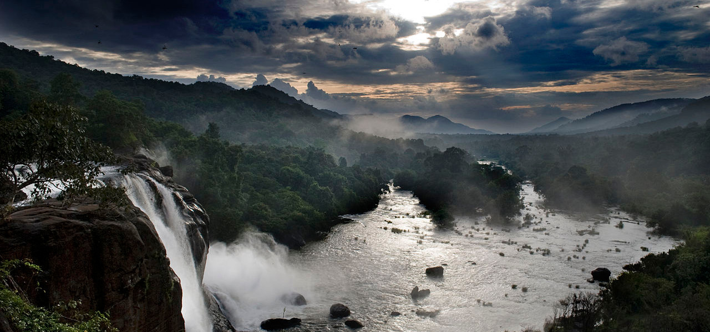

Fringed with lush coconut groves, adorned with endless lagoons, and embraced by the charm of silent backwaters, Alleppey is a paradise for the visitors!

The Niagra of South India
Athirappily Falls is a marvelous cascade of frothy waters that make its way from the Anamudi mountains of the Western Ghats.
Kashmir of South India
Munnar, with sprawling tea plantations, charming towns, winding lanes and exotic flora, is a popular resort town in Kerala.
Flanked by the Arabian Sea in the West, the towering Western Ghats in the East and networked by 44 interconnected rivers, Kerala is blessed with a unique set of geographical features that have made it one of the most sought after tourist destinations in Asia. A long shoreline with serene beaches, tranquil stretches of emerald backwaters, lush hill stations and exotic wildlife, are just a few of the wonders that await you once you crossover to the other side. And what's more, each of these charming destinations is only a two hour drive from the other - a singular advantage no other place on the planet can offer.
Kerala prides itself for being the flag bearer for not just how a culture can respect its past but also march forward with growth & progress as well. Hundred percent literacy, world-class health care systems, India's lowest infant mortality and highest life expectancy rates are among a few of the milestones that the people of the state are extremely proud of.
There are 14 districts in Kerala. They are Alappuzha, Ernakulam, Idukki, Kannur, Kasaragod, Kollam, Kottayam, Kozhikode, Malappuram, Palakkad, Pathanamthitta, Thiruvananthapuram, Thrissur, and Wayanad.
The art of Ayurveda is most extensively practiced in the state. From curing an ailment like arthritis to beauty massages, nothing can beat Kerala in providing Ayurveda treatment.
Nature is at its best in Kerala with beaches covered with palm trees presenting a breathtaking setting all together. Beaches at Kovalam and Varkalaare sure to tempt you to take a dip in the cool and fresh water of the sea.
This coastal state has all types of holiday spot for everyone, whether it's the beach, mountains, adventure or wildlife it makes Kerala quintessential for a laid-back vacation.
Kerala is a popular destination for both domestic as well as foreign tourists. Kerala is well known for its beaches, backwaters in Alappuzha and Kollam, mountain ranges and wildlife sanctuaries.
Kerala is famous especially for its ecotourism initiatives and beautiful backwaters
In fact, it is the only state in India where Ayurveda is still a conventional medicine. Another thing that makes Kerala stand out from other states is the use of gold. According to the world gold council, Kerala gulps up 20% of the country's gold every year.